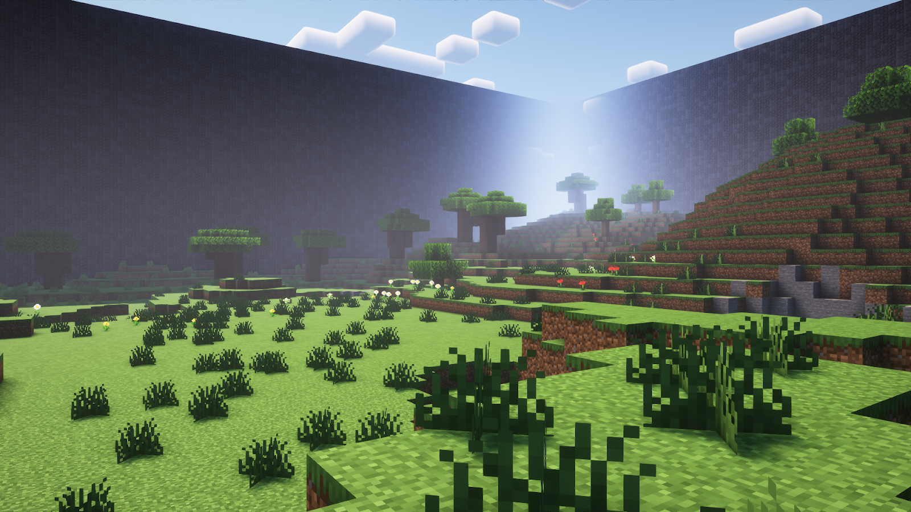
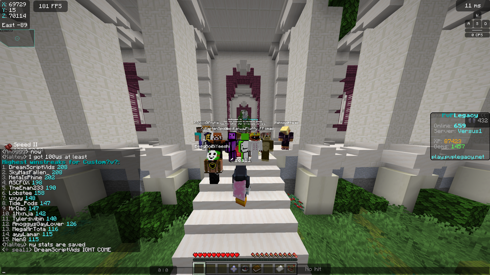
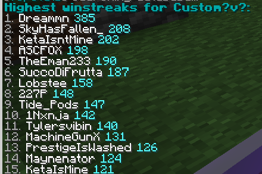

Introduction
Manhunt Kit, is a concept put together by Minecraft players, inspired by the famous content creator ‘Dream’. Manhunt kit is an inventory full of mixed and matched items, related to Dream’s famous challenge “Manhunt”, containing worldly items such as pearls, knockback sword, TNT, cobwebs, fishing rod, lava, and many more.
The goal of the kit was to replicate the Manhunt experience in the PvP kit server known as ‘PvP Legacy’. This kit stood out different from any other, popularizing in the gamemode ‘Custom ?v?’, solely due to being given the thrill of being hunted, and chasing players down.
This simple concept attracted the eyes of thousands, even some of Minecraft’s best fighters, and biggest content creators. Till this day, the community grows bigger than ever, in hopes to feel the thrill others experienced many years ago.
2020: Dawn of a New
Bwilliance; The Creator
With the newfound rise of popular Minecraft Content creator ‘Dream’, came significant attention to his viral challenge “Manhunt”. The concept of Manhunt is simple: 1 player is chosen to beat the game before every other player can kill him.
The concept of freeworld PvP and a wild variety of items and strategies is what interested some players, among those players is one named Bwilliance.
Bwilliance, in search of a 1.9+ PvP server back in 2020, came across a server called ‘PvP Legacy’. PvP Legacy is a custom kits server, meaning you can fight anyone, with anything, with no limitations.
Bwilliance, whilst experimenting on the server, came across a certain map; “Natural Forest”.
Natural Forest
This map created a connection to Bwilliance, as she realized how similar it was to normal vanilla generation. After looking further into the tools in the custom kit server, she also realized it had the items necessary to replicate an average inventory used in a Manhunt, sparking the creation of what's now known as, ‘Manhunt Kit’.
Bwilliance spent days tweaking this kit overtime, as it wasn’t perfect due to the server’s limitations. She used this kit originally to play 1v1s just for fun, and some of her opponents also found her kit intriguing, some even asking for the kit for themselves, specifically; Ronalmar, Dowqe, & 1aye.
These players started to make this kit their own, by adding, removing, and tweaking minor details into their own unique manhunt kit.
The First Ever Manhunt Kit; Bwilliance’s kit | Made November, 2020
Eventually these few players started using this kit in a gamemode called Custom ?v?, a mode where any amount of players can fit in 2 teams, up to 10 players per team.
With this rapid exposition to up to 20 players at a time, the kit began to popularize exponentially, being shared left and right, many players had the kit and began tweaking it in their own unique way as well.
Whilst it was growing popular fast, it was still very new to many. Players were often confused upon seeing the kit so the kit owners often had to explain its purpose and how to play.
In the short few months that Manhunt Kit had spread, a select few players that stood out from the rest were able to become some of the first pro manhunt players; Ronalmar, 1aye, MegaMrTota, gluuuuuuuuuuuu, Bwilliance, and Dowqe. These 6 players are known as; The First Generation.
Ronalmar & 1aye; The Meta Brothers
Ronalmar and 1aye were 2 of the most revolutionary players of all time, even up to 4 years later their impact can be seen in every manhunt game.
Ronalmar and 1aye joined PvP Legacy 2 years prior to the initial creation of Manhunt Kit, and once they discovered the kit itself made by Bwilliance, they were driven to find metas to change the game.
In just the few months of their first finding of the kit, they managed to create some of the most significant technology even to this day, with things such as TNT Rodding, piston cannons, KB carting, spray cannons, and some game breaking bugs.
When the 2 of them first started playing Manhunt Kit, a problem kept occurring to them: anytime they had been outnumbered, say 5v1, not even the best player in the world could win in raw PvP.
This problem was bigger than many think, due to the big teams that go up to 10 players against 10 players.
To solve this, the 2 of them developed trapping strats, and the entire concept of skybasing into Manhunt Kit.
They were the first to successfully take advantage of skybasing, and with the combination of TNT rodding, the 2 of them deemed unstoppable to many others.
With just a few short months, these 2 players created the most game changing tech known to manhunt, and unknowingly, shaped the entire revolutionary history for years to come.
2021: The Nova Era
2021 was seemingly the era producing the most plentiful players that still conquer manhunt to this day.
As 2020 was the year of producing and shaping Manhunt Kit as a whole, 2021 was solely dedicated to player growth and adaptation.
With the constant popularity and rise of the gamemode, the people it reached spread like wildfire causing hundreds of newcomers within just months.
And with such a variety of sculpted categories and skills, players stopped focusing on figuring out the kit, and figuring out what category of playstyle they fell under.
Manhunt Kit skills mainly fall under the following categories; PvP, TNT, Skybasing, Clutching, and Trapping.
This wide variety of skill sets is what made Manhunt Kit unique, giving each player a set of strengths and weaknesses.
The average player falls under at least 1 category, which is what they are commonly used to.
Majority of players had fallen under the PvP category, but soon after the revolution of TNT, players started spreading their skill sets.
Soon some players mastered both PvP and TNT, posing a bigger threat.
And yet the more they played some even mastered up to 3 different categories.
With the sudden rise of players, the lobbies had become more challenging than ever, but that only pushed players to grow even further.
And by mid 2021, The Nova Era, had produced some of the greatest 10v10ers, that even 3 years later, are still some of the most terrifying individuals to this day.
Players such as; Nen8, Unglowing, Blozer, wwomp, Dreammn, Promprero, 227ping, Farwelll, Zypol, MachineGunX, StatusTaken, Roiii, 1Nxnja, NotSoJelly, and many more.
These players would total to around 30 if not more, that had all fully grasped at LEAST 2 different categories, some more than others.
Naturally, when hundreds of players that shared the same passion with one another, played with one another daily, friendships formed.
The gamemode itself started to feel like a true community, with some friends groups here and there.
SMP’s started to form, with some of the top players, building connections to one another.
And as the community started to feel more and more whole, 2 players; Dowqe, and gluuuuuuuuuuu, had created the first ever discord server, “?v? Custom Hangout”.
Custom ?v? Hangout | Created Oct 31st, 2021
This discord server initially started off small, inviting only some of the most elite players during The Nova Era.
And with people being friends with others, naturally more and more got invited, till over a hundred 10v10ers created an active friendly community server.
The Manhunt Kit community was stronger, and closer than ever, with the elite players being able to talk to one another,
The Manhunt Kit community was stronger, and closer than ever, with the elite players being able to talk to one another, strategize, and organize games.
This server became the central hub for all things related to Manhunt Kit and the Custom ?v? gamemode, facilitating growth and competition like never before.
With this newfound organization, players began hosting official events and tournaments, boosting the gamemode’s visibility and legitimacy.
These competitive events pushed players to innovate new tactics and raise the overall skill ceiling.
Community spirit and competitiveness both flourished throughout 2021, cementing The Nova Era as a pivotal chapter in Manhunt Kit’s history.
2022: Corruption and Conflict
Early 2022, the production of star players slows down, producing a few more significant players until coming to a halt. In a year and a half, the greatest players known to minecraft had skyrocketed in skill far beyond anyone had imagined, players were as good as ever, and 10v10 was at its peak. Unfortunately, good things only come temporarily.
Mid 2022, the first ever batch of players that was truly considered to be “new gens” came about. Whilst new players was what was once welcomed and a blessing, had become a curse coming back to strike the community. ‘Newgens’ had begun abusing Ronalmars KB carting, what was once an overpowered technique, turned into an abuse of free power, and a technique that is now considered ‘dishonorable’. New players started resulting in being distant from the original community, turning the manhunt kit into something entirely dishonorable. As new players got a hold of the kit to themselves, they started adding drastic changes, such as enchanted golden apples, 1 minute borders, totems, crystals, anchors, and many more. This unimaginably popularized amongst new players and half of the 10v10s were corrupted with 1 shot items, Manhunt was far beyond recognition and soon after, older veterans started to quit.
10v10 Manhunt Kit was lower than it's ever been, and as the term ‘new gen’ got thrown around, many grew to despise them and the community segregated away from the new. Along with the newgen kits everyone despised, many of the newer players had commonly been toxic as well. Both old and new, hated one another, the community was simply; split in half.
But that wasn’t the only war taking place, 2022 was the era of topstats grinding. Winstreaks were amongst the most commonly grinded, and to obtain a high winstreak in 10v10, players often resulted in using parties of players. The most known win streak party, was led by the player SkyHasFallen_, his team contained the players; KetaIsMine, Usesser, Maynenator, ItzFuzz_, MCC9limellamas, TidePods, VinnyGate, TheEman223, and few more. This party was often looked down on by other manhunters, due to the way he obtained his winstreak. Sky and his party often went to lobbies with worse players, and used slightly rigged kits to get their wins, many had seen this as dishonorable and cheap. And in retaliation, other elite players made their own parties to surpass Sky. Many had gotten close to his 208 winstreak, but many fell short. For months traveling onto years many parties were made, and none had surpassed.
2023: Blossoming and Withering
2023, after years of absence and lack of metas/technology, players started producing viable TNT technology like never before. Last burst of technology as such, hasn’t appeared since 2020, during the Ronalmar & 1aye period.
TNT Technician Pobob, grasped the potential of slime cannons, as he started producing never seen cannons of his own, he was the first to truly master the concept of slime cannons. Amongst that, he even created a few TNT rods that were so difficult, only top players were capable of pulling them off.
Alongside Pobob’s massive revolution, player Farwelll fixated an old TNTrod mechanism ‘Slam Rodding’, this easy technique was misused back then, and creating a viable new efficient way to use it much easier, had a big impact on new gens.
As Slam rodding was popularized more and more, newgens started spamming it throughout lobbies, turning the old vanilla terrain to fields of dynamite. These creations had heightened TNT popularity through the roof for the first time in 3 years, creating the 2nd TNT revolution.
And truly, as amazing as it was, it was poor timing. A small group of 10v10 veterans, formally called the ‘Kool Gamers’, had risen a big problem on the Manhunt Kit community, this group of people had contributed child P**n and z**phelia amongst one another, many documents were written in favor of exposing them and getting rid of them.
And as disgusting as it was, the community couldn’t do anything except wish the worst for them.
With the still constant problem of newgens, and the new problem of pedophilia, veterans slowly quit, and if veterans quit other old players found it no fun causing a chain reaction of people leaving 10v10 for good.
By late 2023, it was even rare to see another old player as it was, players were daily leaving different 10v10 discord servers. It was inevitable, but nobody believed it would be because of this.
The death of 10v10 as it was served upon them and nobody could do anything but watch the memories of 3 years slowly dust away.
Taken July 2023, before the soon downfall of 10v10.
2024: The Renaissance
The foreseen death of 10v10 had a lasting impact, leaving some on a path forwards whilst others in a state of nostalgia. Some can admit that Manhunt Kit had died too soon, while others, thought it wasn't yet over.
Players; Monkmad & Dreammn, still felt defeated to SkyHasFallen_’s win streak party, and decided to try one last time. They gathered a small group of top players such as MegaMrTota, Kalitey, BeegBoiBiYeeshi, SuccoDiFrutta, MachineGunX, and more.
This party initially was for fun, but eventually MegaMrTota and Dreammn contained high win streaks with potential. As Tota had lost his due to computer errors, it was left to Dreammn to finish it off.
The winstreak party caught wind of others and soon other players began to try to stop them, but they couldn’t. Eventually the winstreak party turned into a Discord server, which had accidentally grown to be a new 10v10 hangout with some of the top 10v10ers only residing in it.
As more and more this win streak grew, more and more old veterans slowly returned. Many older veterans all started coming back slowly, players like 227ping, wwomp, woopilas, Curlifrys, and many more. It was an era of rebirth and renew, as 10v10 started to appear like it was 2021 all over again.
And by April 4th, 2024, Dreammn’s win streak party had passed Sky’s World Record, as they were the first to do so, in years.
As the party continued to push Dreammn’s winstreak just a bit further, Dreammn ended off at a 240 win streak… But that didn’t satisfy him.
Dreammn, on his own, surmounted an extra 145 more wins on top of his 240 win streak without any overpowered party, nearly doubling the old world record held by Sky, to an astonishing 385 wins.
Amongst all, as many Manhunt veterans slowly returned, 2024 showed promise to players, some believing that 2025 might be the next Nova Era.
With a sudden rise of promising newgens and the coming of oldgens the clash of eras is inevitable, all the players can do is sit and watch the Past, Present, and Future unfold into a skirmish of timelines.
